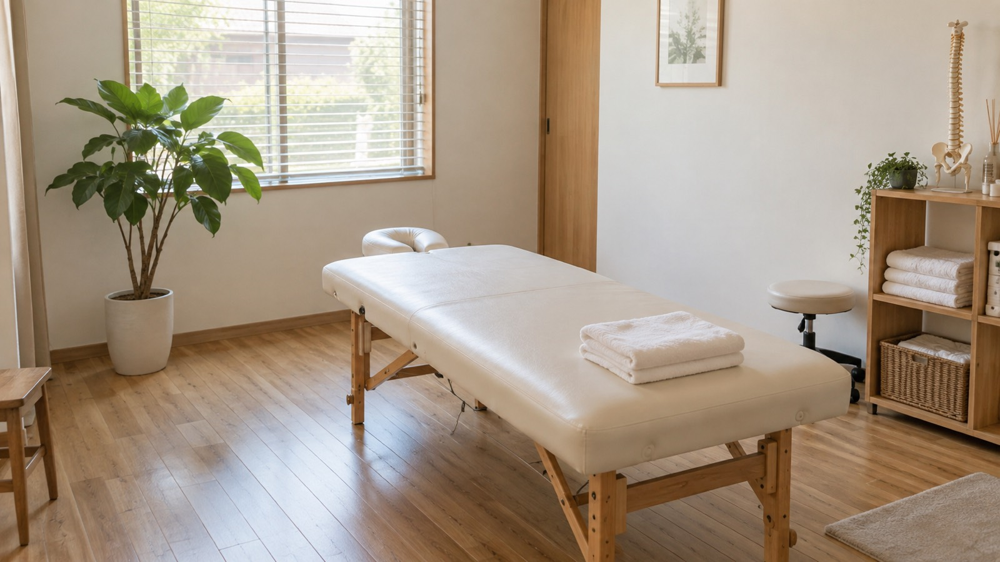
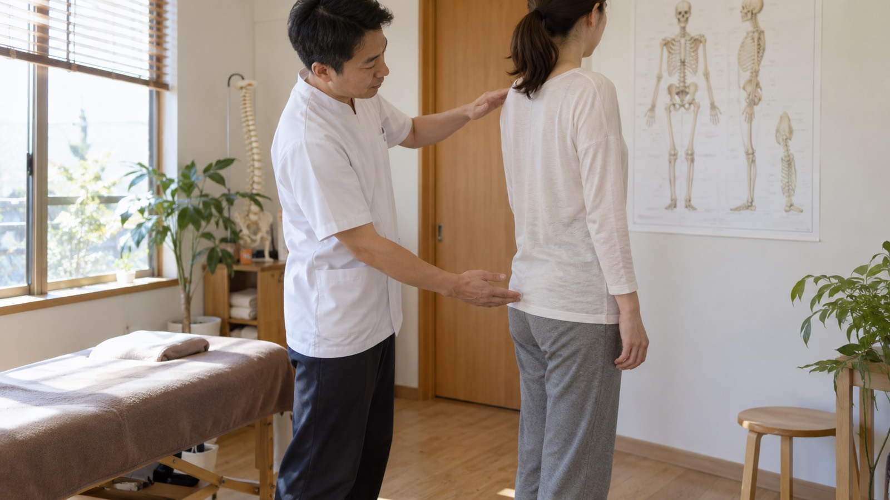

その場しのぎで
終わらせない。
新井薬師前の商店街から一本入った、施術ベッド2台の小さな整体院です。痛む場所だけでなく、そうなった姿勢と使い方まで一緒に見直します。
CONCEPTはる の考え方
戻ってしまうのは、
原因が別の場所にあるから。
肩がつらいのに、原因は肩ではなく股関節の硬さだった。腰が痛むのに、きっかけは足首の使い方だった。よくあることです。はるでは、痛む場所をほぐす前に、からだ全体の動き方を見るところから始めます。
施術ベッドは2台、完全予約制です。同じ時間帯に他の方と重なることがないので、着替えや相談も気兼ねなくどうぞ。
施術者を見る
-
01
まず、原因をさがす
初回は 20 分ほどかけて、日常の姿勢・お仕事・過去のけがまで伺い、立ち方と関節の動きを確認してから施術に入ります。
-
02
強さは、その日のからだに合わせて
ボキボキと鳴らす施術は行いません。痛みの少ない範囲でゆっくり動かし、その場で変化を確かめながら進めます。
-
03
帰ってからの 3 分を渡す
ご自宅でできるストレッチを 1〜2 種類だけお伝えします。多くは続かないので、その方に本当に必要な分だけに絞ります。
STAFF施術者
3 名が在籍しています。指名料はいただいていませんので、得意分野を見てお選びください。
-

院長 / 施術者
坂井 諒RYO SAKAI
施術歴 14 年。整形外科のリハビリ部門で 8 年勤務ののち、2020 年に はる を開院。腰痛と、長く続く肩こりの相談を多く受けています。
-

施術者 / 産後ケア担当
南 かおりKAORI MINAMI
施術歴 11 年。産後骨盤ケアと、女性のからだの相談を担当。お子さま連れのご予約はこちらでお受けしています。
-

施術者
小嶋 あすかASUKA KOJIMA
施術歴 6 年。デスクワークの首・肩、スポーツ後のケアが得意。ご自宅でのストレッチの組み立てもお任せください。
FIRST VISIT初めての方へ
ご来院からお帰りまでの流れです。初回の所要時間は約 70 分（着替えと記入の時間を含みます）。
ご予約
LINE またはお電話で承ります。当日のご予約も、空きがあればお受けできます。
カウンセリング
今つらい場所、いつからか、お仕事中の姿勢を伺います。過去のけがや通院中のご病気もお聞かせください。
検査・施術
立ち方と関節の動きを確認してから施術に入ります。強さはその都度確認しながら進めます。
ご説明・セルフケア
今の状態と、次回までにご自宅でしていただきたいことを 1〜2 つお伝えします。通う頻度の目安もこのときに。
当院は医業類似行為を行う整体院です。病気やけがの治療・診断は行いません。強い痛みやしびれがある場合は、まず医療機関の受診をおすすめしています。
ACCESS院の情報
| 院名 | 整体ルーム はる |
|---|---|
| 住所 | 〒165-0026 東京都中野区新井 2-14-8 2F |
| アクセス | 西武新宿線「新井薬師前」駅 徒歩 4 分 JR 中央線「中野」駅 徒歩 12 分 |
| 受付時間 | 10:00〜20:00最終受付：60 分コース 19:00／40 分コース 19:20 |
| 休診日 | 毎週木曜日・第 2 水曜日 |
| 電話 | 03-1234-5678施術中は出られないことがあります。折り返しご連絡します。 |
略地図です。公開時に地図サービスの埋め込みに差し替えます。